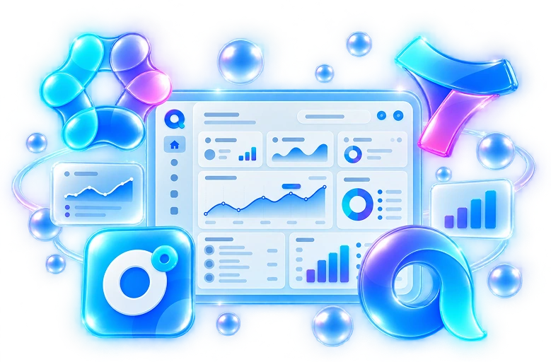
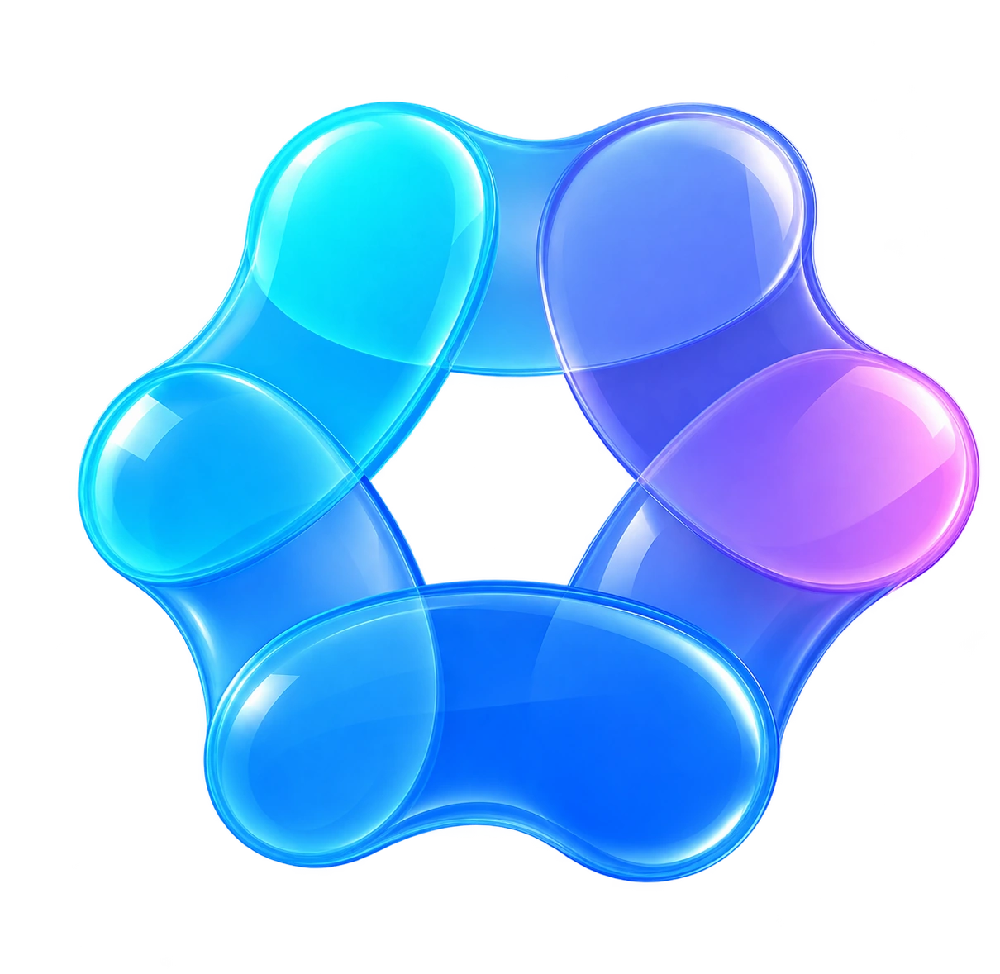
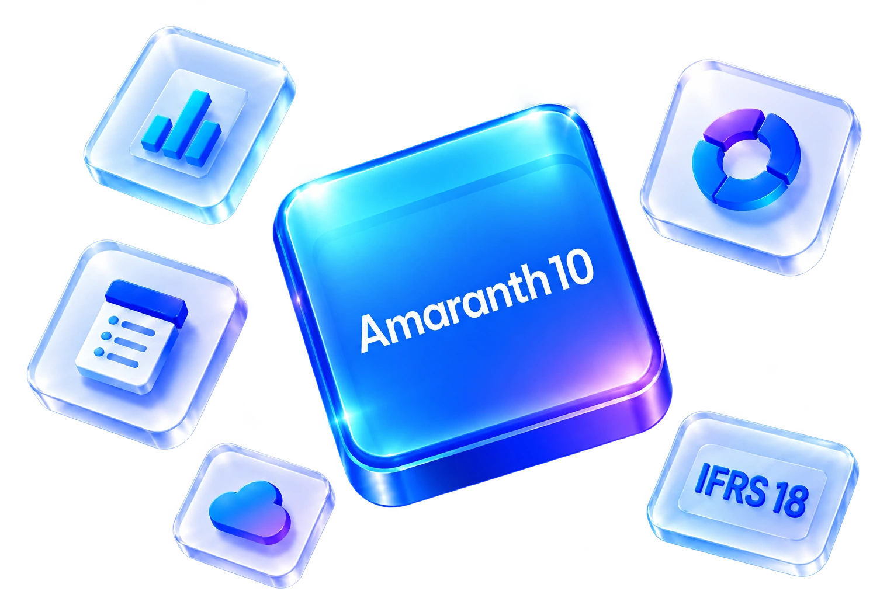

비즈니스의 다음을
연결합니다.
경영관리에서 협업, 그리고 AI까지.
아이원소프트뱅크와 함께 우리 회사에 맞는
업무의 가능성을 넓혀보세요.

우리 회사의 변화가 시작되는 곳.SCROLL TO EXPLORE ↓
ERP를 넘어,
기업의 모든 연결.
재무·인사·공급망에서 그룹웨어와 AI까지. 기업의 프로세스와 데이터를 연결하는 비즈니스 플랫폼입니다.
기능과 화면 살펴보기
OmniEsol 업무 화면
기능을 선택하고, 전체 화면을 확인하세요.
기업의 재무 흐름을 하나로.
회계 기준정보, 자금과 자산을 통합 관리합니다. 그룹사 재무제표와 다양한 업종의 기준을 함께 살펴볼 수 있습니다.
사람을 중심에 둔 인사 관리.
조직·근태·급여·연말정산과 임직원 신청 업무를 연결합니다. 인재육성과 성과평가까지 인사 운영의 흐름을 지원합니다.
구매부터 생산까지 이어지는 데이터.
영업이익 시뮬레이션, 통합 구매와 BOM 관리를 통해 영업·구매·생산 업무의 정보를 연결합니다.
매일의 업무가,
하나의 흐름으로.
ERP, 그룹웨어, 문서관리를 하나의 업무 환경에서. 경영관리와 협업을 연결하는 올인원 디지털 비즈니스 플랫폼입니다.
기능과 화면 살펴보기Amaranth10 업무 화면
기능을 선택하고, 전체 화면을 확인하세요.
내 일정과 팀의 일정을 함께.
개인 일정과 공유 일정을 한곳에서 관리합니다. 실시간으로 변동 사항을 확인하고 구성원과 업무 일정을 조율합니다.
증빙 확인에서 회계 처리까지.
기관별로 수집한 증빙 데이터와 자동 분개 내역을 확인하고 전표를 처리합니다. 회계 업무의 반복 입력을 줄이는 흐름을 제공합니다.
문서와 업무를 잇는 결재.
고객사의 업무 방식과 문서 유형에 맞춘 결재 프로세스를 지원합니다. ERP와 연결해 업무 맥락을 함께 확인합니다.
어디서 일하든,
업무는 같은 곳에서.
경영관리, 협업과 다양한 업무 서비스를 클라우드에서. 기업에 필요한 업무 환경을 한곳에서 사용할 수 있습니다.
기능과 화면 살펴보기WEHAGO 업무 화면
기능을 선택하고, 전체 화면을 확인하세요.
팀의 지식을 함께 쌓아갑니다.
직원 간 공유 지식 공간을 구성하고 문서 버전과 접근 권한을 관리합니다. 이미지와 파일을 함께 작성해 팀의 업무 정보를 공유합니다.
경영관리의 기본을 단단하게.
회계·급여·물류 등 기업 경영관리를 온라인으로 지원합니다. 각 업무의 정보를 연결해 운영 현황을 확인합니다.
사무실 밖에서도 이어지는 업무.
PC와 모바일에서 협업과 업무 서비스를 이용합니다. 장소에 구애받지 않는 근무 환경을 지원합니다.
내 업무를 이해하는,
나만의 AI 비서.
기업의 업무 데이터와 솔루션에 결합된 AI. 문서 작성, 정보 검색과 데이터 분석을 일상적인 업무에서 활용하세요.
기능과 화면 살펴보기ONE AI 업무 화면
기능을 선택하고, 전체 화면을 확인하세요.
질문으로 찾는 비즈니스 정보.
자연어로 요청한 조건을 바탕으로 정보를 검색하고 분석합니다. 결과를 표 등 업무에 활용할 수 있는 형태로 확인합니다.
데이터를 바탕으로 업무를 묻다.
연결된 업무 데이터에 대해 질문하고 필요한 정보를 확인합니다. 공식 소개 화면의 부가세 예상액 질의 사례를 살펴보세요.
첫 문장부터 함께하는 AI.
간단한 요청으로 문서 초안을 작성하고 번역·요약을 지원합니다. Amaranth10의 문서 작성 화면과 결합해 사용할 수 있습니다.
기관의 기준에 맞게,
예산과 업무를 연결.
비영리·공공기관의 예산통제, 회계와 전자결재를 연결합니다. 기관별 업무 특성을 고려한 운영 환경을 살펴보세요.
기능과 화면 살펴보기Amaranth10 비영리 업무 화면
기능을 선택하고, 전체 화면을 확인하세요.
집행 전에 확인하는 예산 잔액.
품의·결의 입력 단계에서 예산 한도와 초과 여부를 확인합니다. 기관의 기준에 맞춰 예산 집행을 관리할 수 있습니다.
지출결의에서 전표까지.
지출결의와 증빙을 검토하고 분개·전표를 생성합니다. 결의와 회계 처리를 하나의 업무 흐름으로 연결합니다.
기관의 문서 흐름을 한눈에.
비영리·공공기관의 결재 유형에 맞춘 프로세스와 ERP 연동을 지원합니다. 결재 HOME에서 문서 진행 현황을 확인합니다.
새로운 재무 보고,
익숙한 업무 안에서.
Amaranth10의 IFRS 18 재무제표관리 기능. 서식·계정 범주·현금흐름표를 연결해 새로운 보고 기준에 대응합니다.
기능과 화면 살펴보기
IFRS18 업무 화면
기능을 선택하고, 전체 화면을 확인하세요.
회사 기준에 맞는 보고 서식.
재무성과표 등 기본 서식을 생성하고 영업·투자·재무 범주 그룹을 회사 기준에 맞춰 설정합니다.
기존 전표와 새 기준을 함께.
원본 전표를 유지하면서 IFRS 18 계정과목과 범주로 재분류합니다. 기존 기준과 새 기준을 병행해 관리합니다.
영업손익에서 시작하는 현금흐름.
간접법 현금흐름표의 시작점을 영업손익으로 반영합니다. 재무성과표의 영업이익 금액과 연동해 확인합니다.
우리 회사에 맞는 변화,
먼저 확인해 보세요.
지금 우리 회사의 디지털·AI 업무 수준은 어느 정도일까요?
AX/DX 체크리스트로 현황을 확인하고, 필요한 변화의 방향을 찾아보세요.
솔루션을 아는 파트너.
업무를 이해하는 아이원.
아이원소프트뱅크는 더존 비즈니스 솔루션의 도입과 활용을 함께하는 파트너입니다. 기업의 업무 환경을 이해하고, 필요한 기능과 연결 방식을 함께 찾아갑니다.
ERP 화면과 보고서의 맞춤 구성부터 업무 프로세스 개선, 다른 시스템과의 연동까지. 기업에 맞는 운영 환경으로 연결합니다.
아이원 공식 홈페이지업무에 맞는 솔루션
조직의 업무와 도입 목적을 함께 살펴봅니다.
우리 회사에 맞는 연결
화면·보고서·프로세스와 시스템 연동을 검토합니다.
꾸준히 이어지는 활용
구축 이후 교육과 고객 지원으로 함께합니다.
좋은 변화는,
업무를 이해하는 대화에서.
- 01
우리 회사의 업무를 나눕니다
현재 사용하는 시스템과 개선할 업무, 도입 목적을 이야기합니다.
- 02
필요한 제품과 구성을 살펴봅니다
기업의 업무에 맞는 기능, 모듈과 연동 범위를 함께 검토합니다.
- 03
도입과 운영의 다음을 준비합니다
구축과 교육, 운영 지원의 방향을 상담합니다.
우리 회사의 다음,
아이원과 이야기해 보세요.
제품이 아직 정해지지 않아도 괜찮습니다.
업무에서 필요한 변화부터 함께 찾아가겠습니다.